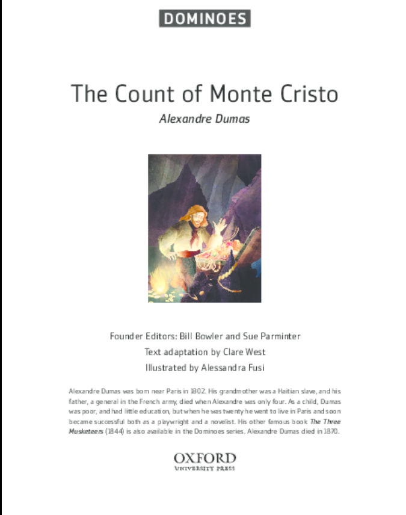
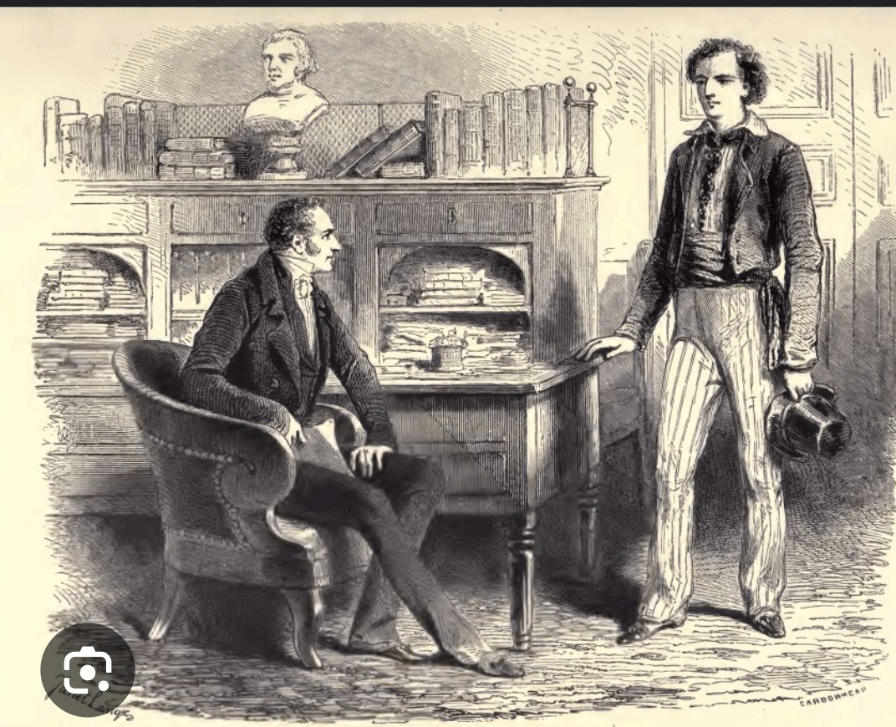
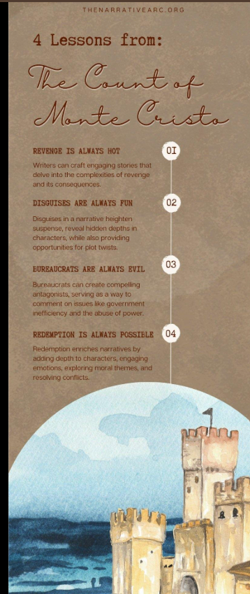

The Count of Monte Cristo (1844) by Alexandre Dumas is a timeless masterpiece of adventure, revenge, and redemption. Set in early 19th-century France, this epic novel follows the transformation of Edmond Dantès, a young sailor wrongfully imprisoned, who later reemerges as the enigmatic and wealthy Count of Monte Cristo to exact vengeance on those who destroyed his life. With its intricate plotting, rich character development, and themes of justice and forgiveness, the novel remains one of the greatest works of literature.
Plot Summary
The story begins with Edmond Dantès, a promising young man on the verge of happiness—he is about to be promoted to captain of his ship and marry his beloved Mercédès. However, his good fortune provokes jealousy in others. Three men—Fernand Mondego (who desires Mercédès), Danglars (a resentful shipmate), and Villefort (a corrupt prosecutor)—conspire to frame Dantès for treason. He is unjustly imprisoned in the Château d’If, where he spends fourteen years in isolation.
During his imprisonment, Dantès befriends Abbé Faria, an elderly prisoner who educates him in languages, science, and philosophy. Before dying, Faria reveals the location of a hidden treasure on the island of Monte Cristo. After a daring escape, Dantès retrieves the treasure and reinvents himself as the mysterious and wealthy Count of Monte Cristo.
Under various aliases, the Count infiltrates Parisian high society, systematically destroying the lives of those who betrayed him. His revenge is methodical and merciless: he ruins Danglars financially, exposes Fernand’s past crimes (destroying his reputation), and manipulates Villefort’s family into tragedy. Yet, as his vengeance unfolds, the Count grapples with the moral consequences of his actions, especially when innocent lives are affected.
Themes & Analysis
1. Revenge vs. Justice
The central theme of The Count of Monte Cristo is the nature of revenge. Dantès initially believes his vengeance is divine justice, but as he executes his plans, he questions whether he has become as cruel as his enemies. The novel explores whether true justice exists or if revenge only perpetuates suffering.
2. Transformation and Identity
Dantès’ evolution from a naïve young man to a vengeful aristocrat is compelling. His multiple identities—the sailor, the prisoner, the Count—reflect his psychological journey. The novel suggests that trauma and betrayal can fundamentally alter a person, for better or worse.
3. Forgiveness and Redemption
Despite his thirst for revenge, the Count encounters characters who challenge his beliefs. Mercédès, still loving him despite his transformation, and Maximilien Morrel, the son of Dantès’ former benefactor, represent innocence and forgiveness. The novel ultimately suggests that mercy and love may be more powerful than vengeance.
4. Strengths and Weaknesses
Dumas’ storytelling is gripping, filled with intricate schemes, dramatic revelations, and rich historical detail. The novel’s length (over 1,000 pages in some editions) allows for deep character exploration, though some subplots (such as the Roman bandit Luigi Vampa) feel tangential.
The pacing varies—while the prison escape and revenge plots are thrilling, some sections (like the lengthy Parisian social maneuvers) may test modern readers’ patience. However, the payoff is worth it, as the final confrontations are deeply satisfying.
Conclusion
The Count of Monte Cristo is more than a tale of revenge; it is a meditation on justice, power, and human nature. Dumas crafts a story that is both thrilling and philosophical, with a protagonist who is both hero and antihero. While the novel’s length and occasional digressions may be challenging, its emotional depth and narrative brilliance make it a must-read.
For those who enjoy adventure, drama, and moral complexity, The Count of Monte Cristo remains an unparalleled classic. It is a story that lingers in the mind, asking profound questions about the cost of vengeance and the possibility of redemption.
Rating
⭐⭐⭐⭐☆ (4/5)
We rated this book 4 out of 5 based on its storytelling, themes, and overall impact.